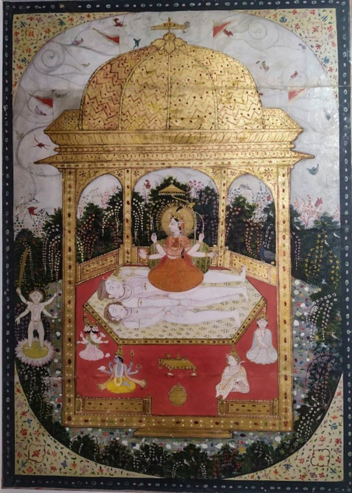
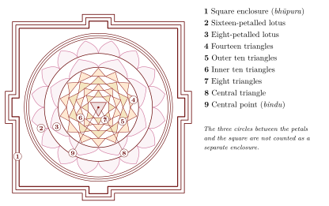
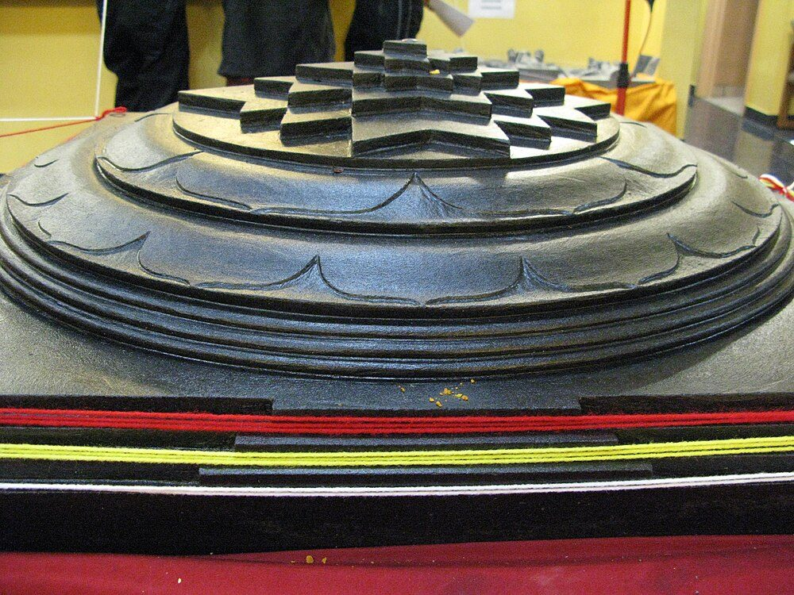
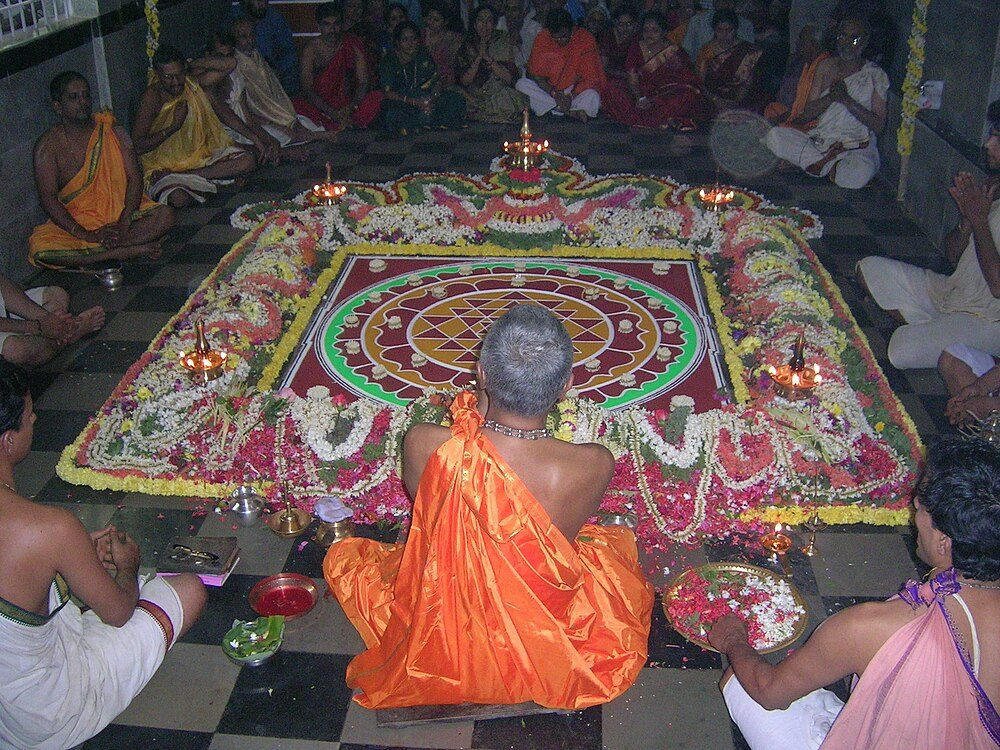

Chapter 5: The Śrīvidyā Tradition¶
Lalitāsahasranāma, opening names
śrīmātā śrīmahārājñī śrīmatsiṃhāsaneśvarī |
cidagnikuṇḍasambhūtā devakāryasamudyatā ||
The auspicious Mother, the great Queen, mistress of the glorious lion-throne, born from the fire-altar of consciousness, intent on accomplishing the work of the gods.
5.1 Introduction¶
Śrīvidyā (“auspicious wisdom”) is the tradition of worship of the goddess Lalitā Tripurasundarī through her mantra, the śrīvidyā itself, and her diagram, the Śrīcakra. It originated as one of the Kaula traditions: its earliest scripture, the Vāmakeśvarīmata (also known as the Nityāṣoḍaśikārṇava), was commented on in thirteenth-century Kashmir by Jayaratha, the commentator of the Tantrāloka. In South India, from about the fourteenth century, the tradition was progressively adopted by learned Brahmins and by the Advaita monasteries, and was reshaped in a more orthodox, Vedāntic direction (Brooks 1990, 1992; Sanderson 2009).
Three elements are central to it: the mantra, the fifteen-syllable pañcadaśī or its sixteen-syllable extension, the ṣoḍaśī; the diagram, the Śrīcakra or Śrīyantra; and the ritual in which the goddess and her retinue are worshipped in the nine enclosures of that diagram (navavaraṇapūjā).
5.2 Lalitā Tripurasundarī¶
5.2.1 The Goddess¶
Lalitā Tripurasundarī is the central deity of Śrīvidyā. The commentators explain her names as follows: she is Lalitā, “she who plays”, because the universe is her play (līlā); Tripurā, “of the three cities”, a name read as referring to the triads of creation, such as the three states of waking, dream and deep sleep, the three powers of will, knowledge and action, and the three sections of her mantra; and Sundarī, “the beautiful”.
She is depicted as a beautiful sixteen-year-old goddess, red in colour, holding a noose, an elephant goad, a sugarcane bow and five flower arrows, and seated on a throne whose legs are the gods Brahmā, Viṣṇu, Rudra and Īśvara, with Sadāśiva as its seat. Figure 5.1 shows a Kangra painting of the goddess.


5.2.2 The Lalitāsahasranāma¶
The Lalitāsahasranāma (“Thousand Names of Lalitā”), presented as part of the Lalitopākhyāna of the Brahmāṇḍa Purāṇa, is the most widely recited hymn of the tradition. Its names describe the goddess’s iconography, her victory over the demon Bhaṇḍa, her city and her abode in the Śrīcakra, her presence in the body as kuṇḍalinī, and her identity with the absolute. The standard commentary is Bhāskararāya’s Saubhāgyabhāskara (1728). The Lalitātriśatī, a hymn of three hundred names, is structured on the fifteen syllables of the pañcadaśī: each syllable begins twenty names.
5.3 The Śrīcakra¶
5.3.1 Structure¶
The Śrīcakra is the most celebrated of Hindu yantras. At its centre is a point (bindu), the union of Śiva and Śakti. Around it nine large triangles interpenetrate, four with the apex upward (the “Śiva” triangles) and five with the apex downward (the “Śakti” triangles); their intersections produce forty-three smaller triangles, arranged as a central triangle surrounded by rings of eight, ten, ten and fourteen. The triangles are enclosed by a lotus of eight petals and a lotus of sixteen petals, then by three circles, and finally by a square enclosure (bhūpura) of three lines with a gate in each side. The tradition counts these elements as nine concentric enclosures (āvaraṇas), from the square to the point; Figure 5.2 shows them schematically, numbered as in Table 5.1.

Drawing the nine triangles so that their lines meet exactly at common points is a genuinely difficult geometric problem, and traditional manuals and modern writers give different constructions (Bühnemann 2003; Khanna 2003). Popular claims that the figure encodes the golden ratio, fractals or other modern mathematics have no support in the classical texts.
The Śrīcakra may also be made in three dimensions, as a meru, in which the enclosures rise in tiers towards the central point like the cosmic mountain Meru (Figure 5.3).


5.3.2 The Nine Enclosures (Āvaraṇas)¶
The Śrīcakra is understood as nine concentric “enclosures” (āvaraṇas or cakras), each with its presiding form of the goddess (cakreśvarī) and its class of attendant yoginīs. The standard names, found in the Vāmakeśvarīmata tradition and the Bhāvanā Upaniṣad, are (Table 5.1):
| No. | Name | Figure | Presiding goddess | Class of yoginīs |
|---|---|---|---|---|
| 1 | Trailokyamohana | Square enclosure | Tripurā | Prakaṭa (“manifest”) |
| 2 | Sarvāśāparipūraka | Sixteen petals | Tripureśī | Gupta (“hidden”) |
| 3 | Sarvasaṁkṣobhaṇa | Eight petals | Tripurasundarī | Guptatara (“more hidden”) |
| 4 | Sarvasaubhāgyadāyaka | Fourteen triangles | Tripuravāsinī | Sampradāya |
| 5 | Sarvārthasādhaka | Outer ten triangles | Tripurāśrī | Kulottīrṇa |
| 6 | Sarvarakṣākara | Inner ten triangles | Tripuramālinī | Nigarbha |
| 7 | Sarvarogahara | Eight triangles | Tripurāsiddhā | Rahasya (“secret”) |
| 8 | Sarvasiddhiprada | Central triangle | Tripurāmbā | Atirahasya (“most secret”) |
| 9 | Sarvānandamaya | Central point | Mahātripurasundarī | Parāparātirahasya |
The names describe a ritual progression from the “enchantment of the three worlds” at the outer enclosure to “complete bliss” at the centre. The Bhāvanā Upaniṣad identifies the enclosures with parts of the worshipper’s body and with elements of the cosmos, so that the external worship can be performed internally as meditation.
5.4 The Śrīvidyā Mantra¶
5.4.1 The Pañcadaśī¶
The central mantra is the pañcadaśī (“fifteen-syllabled”), divided into three sections called kūṭas (“peaks”). In its most common form, the “kādi” form attributed to the god Kāma, the sections have five, six and four syllables; another form, the “hādi” form, is attributed to the sage Lopāmudrā (Table 5.2).
| Kūṭa | Name | Syllables | Traditional correlations |
|---|---|---|---|
| First | Vāgbhava | 5 | Speech; power of knowledge; the head of the goddess |
| Second | Kāmarāja | 6 | Desire; power of action; her torso |
| Third | Śakti | 4 | Power; power of will; her lower body |
The tradition holds that the mantra must be received through initiation; texts customarily encode its syllables rather than state them. The ṣoḍaśī adds a sixteenth syllable and is given at a higher stage of initiation.
5.5 The Two Schools¶
South Indian Śrīvidyā distinguishes two orientations (Table 5.3; Brooks 1992):
| Aspect | Kaula | Samaya |
|---|---|---|
| Practice | External worship of the drawn or metal Śrīcakra, with internal meditation; some lineages retain the Kaula sacraments, actual or substituted | Rejects external worship of the yantra and all left-hand elements; worship is internal, in the cakras of the body |
| Key authorities | Vāmakeśvarīmata, Yoginīhṛdaya and their commentaries; Bhāskararāya | Lakṣmīdhara’s commentary on the Saundaryalaharī; the Śubhagodaya and other works attributed by tradition to Gauḍapāda and Śaṅkara |
| Social setting | Smārta Brahmin householders and other lineages | Associated with the Advaita monasteries of Śṛṅgerī and Kāñcī |
Both revere the same goddess, mantra and diagram. Brooks shows that the Samaya position represents a deliberate “brahmanisation” of a Kaula tradition, in which the transgressive elements were reinterpreted or excluded (Brooks 1992).
5.6 The Saundaryalaharī¶
The Saundaryalaharī (“Wave of Beauty”) is a hundred-verse hymn to the goddess, attributed by tradition to Śaṅkara. Modern scholars generally doubt the attribution to the author of the Advaita commentaries: the poem’s Tantric content and its first attested use point to a later date, and the tradition ascribes many devotional works to Śaṅkara (Brown 1958). The poem combines devotional poetry of great beauty with encoded Tantric doctrine, alluding to the Śrīcakra, the pañcadaśī and the cakras of the body, and it has been used in ritual, with later manuals assigning a yantra and a purpose to each verse.
It is traditionally divided into the Ānandalaharī (verses 1–41), more explicitly doctrinal, and the Saundaryalaharī proper (42–100), a description of the goddess from head to foot. Lakṣmīdhara’s commentary (probably 16th century) gives it the Samaya interpretation (Sastri and Ayyangar 1937). Its first verse, quoted at the head of Chapter 4, states the Śākta doctrine that Śiva without Śakti “cannot even stir”.
5.7 Key Authors of the Śrīvidyā Tradition¶
The literature of Śrīvidyā runs from Kashmir to the Kaveri delta. In thirteenth-century Kashmir Jayaratha, the commentator of the Tantrāloka, also commented on the Vāmakeśvarīmata. Puṇyānanda and Amṛtānanda (c. 13th–14th century), authors respectively of the Kāmakalāvilāsa and of the Dīpikā commentary on the Yoginīhṛdaya, interpreted the tradition through Kashmiri non-dual theology. Tradition credits Gauḍapāda and Śaṅkara with the Śubhagodaya, the Saundaryalaharī and the Prapañcasāra, but most historians do not accept these attributions. Lakṣmīdhara (c. 16th century) and Kaivalyāśrama, author of the Saubhāgyavardhinī, wrote the principal commentaries on the Saundaryalaharī, and the eighteenth-century Bhāskararāya, discussed below, gave the tradition its early modern form.
5.8 The Navavaraṇa Worship¶
The worship of the nine enclosures (navavaraṇapūjā) is the central ritual of Śrīvidyā. It proceeds through the enclosures of the Śrīcakra from the outer square to the central point, worshipping in each the presiding goddess, her attendant deities and yoginīs, with their mantras and hand gestures (mudrās; Figure 5.4). A full performance includes:
-
Preliminary purifications: purification of the elements of the body (bhūtaśuddhi), breath control and the placing of mantras on the body (nyāsa), including in some lineages the elaborate “great sixfold” mahāṣoḍhānyāsa;
-
Mental worship of the goddess and the Śrīcakra;
-
Preparation of the special offering (viśeṣārghya), which in Kaula lineages may involve the sacraments discussed in Chapter 4;
-
External worship of the goddess at the centre with the customary offerings;
-
Worship of the nine enclosures in sequence;
-
Recitation of the mantra and of hymns such as the Lalitāsahasranāma;
-
Fire offering in elaborate performances, and concluding rites.


5.9 Philosophy¶
The theology of Śrīvidyā, especially as developed by Puṇyānanda, Amṛtānanda and Bhāskararāya, draws heavily on Kashmiri non-dual Śaivism (Chapter 6). Reality is the unity of luminous consciousness (prakāśa, Śiva) and its reflexive self-awareness (vimarśa, Śakti); the cosmos unfolds through the thirty-six tattvas of the Kashmiri scheme; worldly enjoyment and liberation (bhukti and mukti) are both offered and are not regarded as opposed; and the worshipper’s own body is understood as the Śrīcakra and the site of internal worship.
5.9.1 Sāmarasya¶
The term sāmarasya (“sameness of savour”) denotes the non-dual state in which Śiva and Śakti, consciousness and its power, worshipper and deity, are realised to be of one nature. It is symbolised by the central point of the Śrīcakra and said to be realised when the mantra ceases to be an external recitation and becomes the worshipper’s own awareness.
5.9.2 Desire (Kāma)¶
Śrīvidyā gives desire a positive theological value. The goddess is Kāmeśvarī, “Sovereign of Desire”, the consort of Kāmeśvara; she holds the sugarcane bow and flower arrows of the love-god; and the second section of her mantra is named after Kāma. The commentators distinguish desire as contracted, egoistic craving from desire as the universal creative impulse of the goddess, and treat practice as the transformation of the former into the latter.
5.10 The Yoginīhṛdaya¶
The Yoginīhṛdaya (“Heart of the Yoginī”), regarded as the second part of the Vāmakeśvarīmata, gives the inner, esoteric doctrine of the tradition in three “conventions” (saṁketas):
-
Cakrasaṁketa: the Śrīcakra as the unfolding of consciousness and its correspondence with cosmos and body;
-
Mantrasaṁketa: the meanings of the pañcadaśī, interpreted on several levels;
-
Pūjāsaṁketa: the worship of the goddess, understood as the realisation of the identity of worshipper, deity, mantra and diagram.
Amṛtānanda’s Dīpikā commentary reads the text through the Pratyabhijñā philosophy.
5.11 Bhāskararāya¶
Bhāskararāya (Bhāsurānandanātha, 18th century), a Maharashtrian Brahmin who settled in the Kaveri delta under Marāṭhā patronage, is the most important Śrīvidyā author of the early modern period. A learned scholar of Vedic ritual, Mīmāṃsā and grammar as well as an initiate, he sought to show that Kaula Śrīvidyā was consistent with Vedic orthodoxy.
| Work | Type | Significance |
|---|---|---|
| Saubhāgyabhāskara | Commentary on the Lalitāsahasranāma (1728) | The standard commentary, explaining the names through mantra, yantra and doctrine |
| Varivasyārahasya | Independent treatise with auto-commentary | On the meaning of the pañcadaśī and worship |
| Setubandha | Commentary on the Vāmakeśvarīmata / Nityāṣoḍaśikārṇava | Commentary on the root scripture |
| Guptavatī | Commentary on the Devīmāhātmya | Influential Śākta reading of the text |
His works remain standard references for South Indian Śrīvidyā practitioners, and his synthesis of Kaula practice with Vedic orthodoxy shaped the tradition’s modern form (Brooks 1992).
5.12 The Myth of Lalitā¶
The Lalitopākhyāna (“Tale of Lalitā”), presented as part of the Brahmāṇḍa Purāṇa, gives Śrīvidyā its mythology. When Śiva burns Kāma, the god of love, with the fire of his third eye, a demon, Bhaṇḍa, is formed from the ashes and oppresses the worlds. The gods, led by Indra, perform a great sacrifice, and from the “fire-altar of consciousness” the goddess Lalitā arises, beautiful and armed with noose, goad, sugarcane bow and flower arrows. She marries Kāmeśvara, a form of Śiva, and with an army of goddesses — including her ministers Śyāmalā (Mātaṅgī) and Vārāhī, and the nityā goddesses of the lunar days — she destroys Bhaṇḍa and his sons in a great battle. She then dwells in her jewelled city, Śrīpura, on the summit of Mount Meru, whose concentric walls and palaces correspond to the enclosures of the Śrīcakra.
The myth expresses Śrīvidyā’s theology in narrative form: desire, burnt by asceticism, returns as demonic when separated from its divine source, and is restored only when it is reintegrated in the goddess who is herself the sovereign of desire. The names of the Lalitāsahasranāma follow the order of the tale.
5.13 The Kāmakalāvilāsa and the Bhāvanā Upaniṣad¶
Two works illustrate how Śrīvidyā turned its ritual into contemplation.
Puṇyānanda’s Kāmakalāvilāsa, a short work in fifty-five verses with a commentary by Naṭānandanātha, describes the emergence of the cosmos from the union of Śiva as light (prakāśa) and Śakti as reflexive awareness (vimarśa). Their union is visualised as the kāmakalā, a subtle triangle formed by a white point, a red point and a mixed point, which is the goddess’s most secret form and the seed of the Śrīcakra and of the mantra.
The Bhāvanā Upaniṣad, a late text attached to the Atharvaveda and commented on by Bhāskararāya, prescribes an “inner worship” in which every element of the Śrīcakra and of the worship is identified with an element of the worshipper’s body and mind: the nine enclosures with the nine apertures and the faculties, the attendant goddesses with the vital breaths and mental states, the offerings with attitudes of mind. The worshipper who knows these identities, the text says, is liberated while living. Such texts made it possible for the Samaya school to replace external ritual entirely by contemplation (Brooks 1990).
5.14 The Living Tradition¶
Śrīvidyā remains alive in South India. The Advaita monasteries of Śṛṅgerī and Kāñcī maintain Śrīcakra worship; in the Kāmākṣī temple at Kāñcīpuram a Śrīcakra before the goddess, said by tradition to have been installed by Śaṅkara, receives worship, and Śrīcakras are worshipped in many other goddess temples. Smārta Brahmin families and numerous gurus in Tamil Nadu, Kerala, Andhra Pradesh and Karnataka transmit the tradition, and since the twentieth century some teachers have initiated non-Brahmins, women and foreigners, a development criticised by conservatives (Brooks 1992).